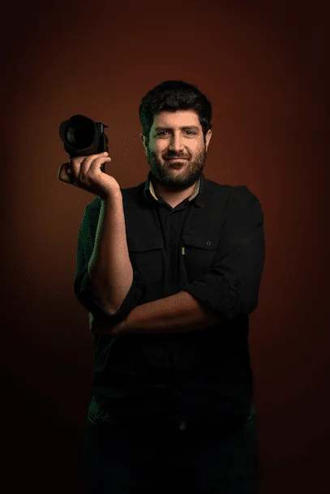

A founder-led production company built for clear execution in Paraguay.
About Maite Media
Maite Media exists to help clients produce with more confidence on the ground in Paraguay, combining local knowledge, operational focus, and a professional standard of service.
A company-first brand with founder-led accountability
Maite Media is positioned as a production partner for agencies, production companies, corporate teams, nonprofits, and institutions that need dependable execution in Paraguay.
What the company is built to do
The company’s role is practical and clear: help clients move from brief to production with less friction, stronger coordination, and more confidence in the local layer of the work.
Built around communication, trust, and execution
We believe professional production starts with clarity: clear scope, clear communication, clear expectations, and clear follow-through. That matters even more when clients are coordinating remotely or across markets.

Led by Fernando Cañete
Maite Media is led by Fernando Cañete, whose role is closely tied to the company’s production standards, client communication, and overall execution approach.
Founder-led support, not a personal-brand site
This is not a personal-brand website. It is a company-led operation strengthened by founder involvement. Clients work with Maite Media as a professional production partner, with leadership that remains close to quality and delivery.
Frequently asked questions
Is Maite Media a production company or a personal brand?
Maite Media is a production company. The site is company-first, with founder-led accountability as a supporting strength.
Who leads Maite Media?
Maite Media is led by Fernando Cañete.
Do you work with international clients and outside teams?
Yes. The company is positioned to support agencies, production companies, brands, nonprofits, and institutions working in Paraguay and across Mercosur.
Need a production partner in Paraguay?
Tell us what you are planning and what kind of support would make the project easier to execute.